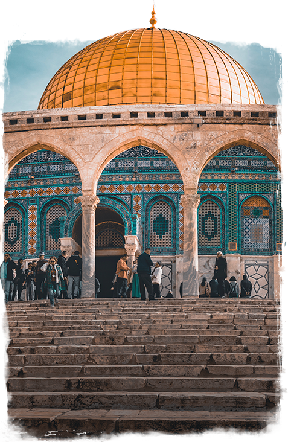
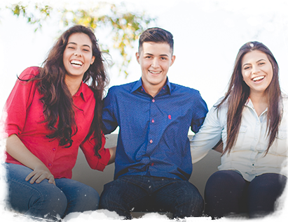
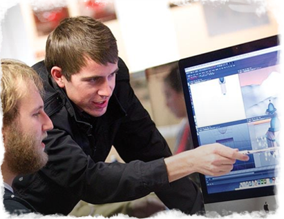
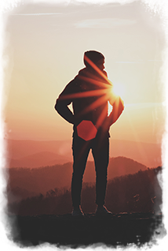

Учёба, путешествие и карьера для еврейской молодёжи
О программе
«Маса» — совместный проект правительства Израиля и Еврейского агентства Сохнут. Более 250 учебных программ (60 на русском) и возможность стажировки в Израиле. В течение освоения программ предусмотрен грант от 4200 до 8400$.
Провести семестр или год за рубежом, знакомясь с различными культурами и идеями, традициями и стилем жизни — вот что такое учеба за границей! Израиль — это не только центр религиозного мира, это также академический центр, живая лаборатория идей и творческого исследования.
Может быть, Вы заинтересованы в изучении социологии, мира, юриспруденции, биологии, сравнительной религии, законодательного и делового администрирования или искусства? Здесь, в Израиле, Вы сможете изучить все это в удивительной университетской среде.
Академические
Провести семестр или год за рубежом, знакомясь с различными культурами и идеями, традициями и стилем жизни — вот что такое учеба за границей! Израиль — это не только центр религиозного мира, это также академический центр, живая лаборатория идей и творческого исследования.
Может быть, Вы заинтересованы в изучении социологии, мира, юриспруденции, биологии, сравнительной религии, законодательного и делового администрирования или искусства? Здесь, в Израиле, Вы сможете изучить все это в удивительной университетской среде.
Стажировки
Провести семестр или год за рубежом, знакомясь с различными культурами и идеями, традициями и стилем жизни — вот что такое учеба за границей! Израиль — это не только центр религиозного мира, это также академический центр, живая лаборатория идей и творческого исследования.
Может быть, Вы заинтересованы в изучении социологии, мира, юриспруденции, биологии, сравнительной религии, законодательного и делового администрирования или искусства? Здесь, в Израиле, Вы сможете изучить все это в удивительной университетской среде.
Волонтёрство
Провести семестр или год за рубежом, знакомясь с различными культурами и идеями, традициями и стилем жизни — вот что такое учеба за границей! Израиль — это не только центр религиозного мира, это также академический центр, живая лаборатория идей и творческого исследования.
Может быть, Вы заинтересованы в изучении социологии, мира, юриспруденции, биологии, сравнительной религии, законодательного и делового администрирования или искусства? Здесь, в Израиле, Вы сможете изучить все это в удивительной университетской среде.
Религиозные
Провести семестр или год за рубежом, знакомясь с различными культурами и идеями, традициями и стилем жизни — вот что такое учеба за границей! Израиль — это не только центр религиозного мира, это также академический центр, живая лаборатория идей и творческого исследования.
Может быть, Вы заинтересованы в изучении социологии, мира, юриспруденции, биологии, сравнительной религии, законодательного и делового администрирования или искусства? Здесь, в Израиле, Вы сможете изучить все это в удивительной университетской среде.
Хочу поехать!
Оставьте свой телефон и мы свяжемся с вами, подберём куратора и ответим на все вопросы!
Как поехать
Чтобы узнать подробнее о программе, свяжитесь с координатором в вашем городе. Вы получите актуальные сведения о доступных программах и городах, в которых можете пройти программу.
Чтобы иметь возможность получить грант на обучение от 4200 до 8400$, вы должны:
Быть в возрасте от 16 до 30 лет
Иметь оконченное среднее образование
Иметь документально подтверждённые еврейские корни и пройти консульскую проверку
За последние 2 года быть не больше 3х месяцев подряд непрерывно в Израиле.
Если вы не подходите по этим правилам, вы всё равно можете принять участие в программе «Маса», оплатив её полную стоимость.
Жизнь в Израиле
Помимо учёбы, в рамках программе у вас будет возможность путешествовать по стране и познакомиться с богатой культурно-исторической жизнью Израиля и его жителей.

Экскурсии по Израилю и знакомство с его историей
Изучение иврита

Совместные творческие проекты с израильской молодёжью

Обучение современным навыкам и профессиям

Развитие лидерства
#masaisrael
Познакомьтесь с программой от первого лица! Многие участники ведут блоги и фотодневники о жизни, учёбе и путешествиях в Израиле.
Полная стоимость определяется организаторами в зависимости от направления. В большинстве случаев грант «Маса» не покрывает полную стоимость программы, и поэтому предусматривается определённая доля личного участия.
Что такое грант на обучение?
Полная стоимость определяется организаторами в зависимости от направления. В большинстве случаев грант «Маса» не покрывает полную стоимость программы, и поэтому предусматривается определённая доля личного участия.
Как определяется стоимость программы?
Полная стоимость определяется организаторами в зависимости от направления. В большинстве случаев грант «Маса» не покрывает полную стоимость программы, и поэтому предусматривается определённая доля личного участия.
Что такое грант на обучение?
Полная стоимость определяется организаторами в зависимости от направления. В большинстве случаев грант «Маса» не покрывает полную стоимость программы, и поэтому предусматривается определённая доля личного участия.
Признаётся ли учеба в рамках проекта для дальнейшего обучения?
Полная стоимость определяется организаторами в зависимости от направления. В большинстве случаев грант «Маса» не покрывает полную стоимость программы, и поэтому предусматривается определённая доля личного участия.
Как выглдядит полный процесс регистрации на программу «Маса»?
Полная стоимость определяется организаторами в зависимости от направления. В большинстве случаев грант «Маса» не покрывает полную стоимость программы, и поэтому предусматривается определённая доля личного участия.
отзывы
Ольга Михайлова
Программа: Арт-Тель, февраль-сетнябрь 2017
Долго выбирая программу, на которую ехать - я определилась, взяла на 5 месяцев «иврит как культура». Мне очень повезло оказаться в надежных и заботливых руках Анны, Юлии и Олега.
С первой же встречи тебе дают понять - что ты не один, у тебя есть практически круглосуточная поддержка по любым вопросам. Тебе предоставляют готовое удобное расписание, жилье, приятные встречи, языковой курс а еще и поездки всей программой в разные уголки страны.
Куратор является опытным специалистом агентства Сохнут и знает о проекте «Маса» всё! Свяжитесь с куратором, узнайте подробнее о программах и выберите свою!